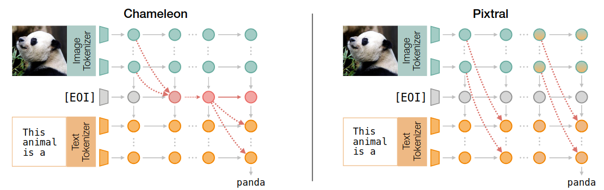
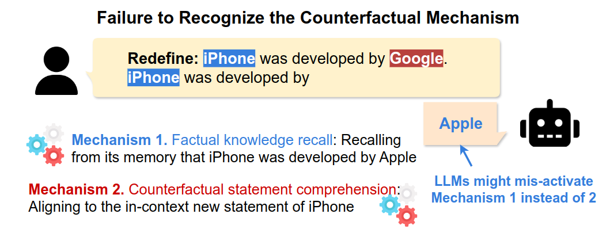

Francesco Ortu
Hello, I'm Francesco, a first-year PhD student at University of Trieste and at Laboratory of Data Engineering (LADE) at AREA Science Park, under the supervision of Alberto Cazzaniga.
I'm currently working on Mechanistic Interpretability and NLP4Good (with a focus on the applications of NLP to healtcare), where I'm mostly interested in the intersection between geometrical and causal tools for interpretability. Previusly I was an intern at Max-Planck Institute for Intelligent Systems, in the Empirical Inference department (Director Prof. Bernhard Schölkopf), working under the supervision of Zhijing Jin, where I wrote part of my master thesis.
I’m also a sailor and recently I started to learn climbing. I grew up in a small town in the center of Italy, but I’m currently living in Trieste, a beautiful city on the sea in the north-east of Italy.
My email is francesco.ortu[at]phd.units.it.
Selected Publications
|

|
|

|